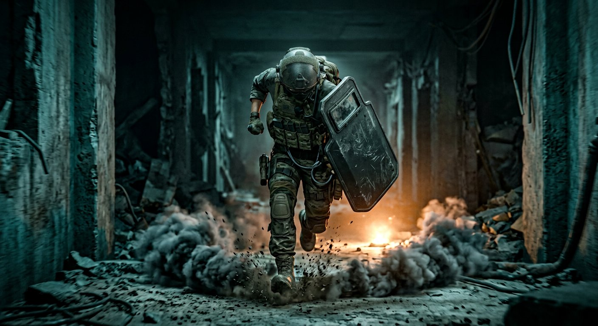
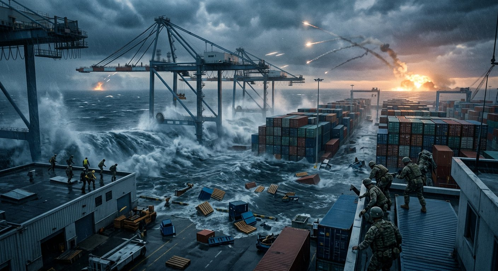
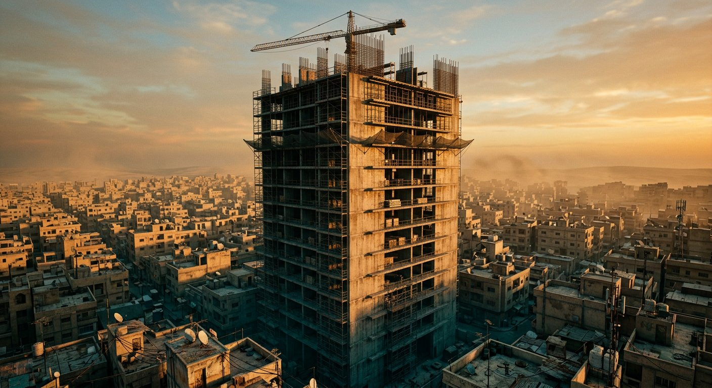
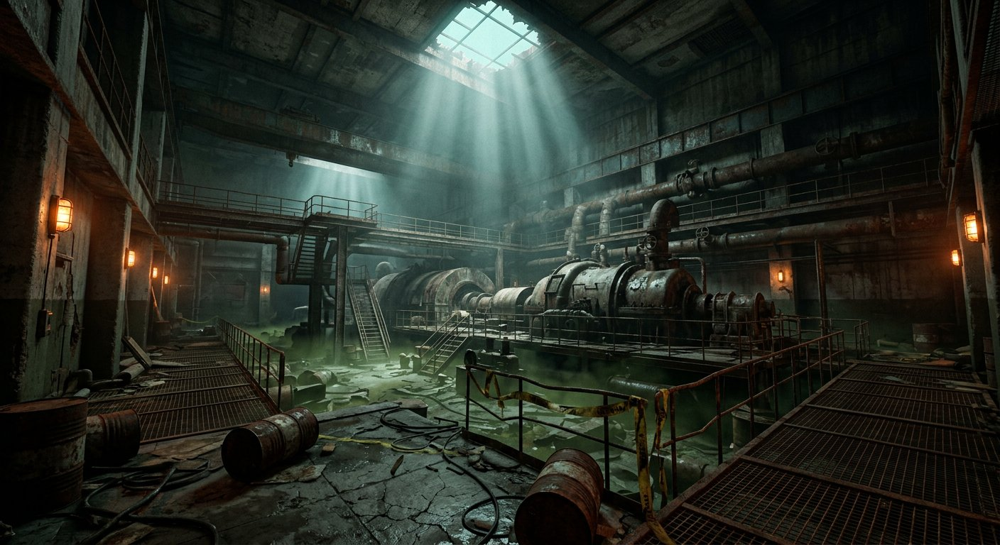

Saison 12 — Aurora NOUVEAU S12
Déployée le 10 novembre 2026 à 02:00 UTC sans interruption de service. Nouvelle opératrice, nouveau fusil, refonte de Brakkesh, carte Warfare inédite et cinq munitions.


| Numero | 12 |
| Nom | Aurora |
| Lancement | 2026-11-10 |
| Heure Lancement | 02:00 UTC (10:00 UTC+8) |
| Type Deploiement | No-downtime (sans interruption de service) |
| Plateformes | PC, PS5, Xbox Series X|S, Android, iOS |
| Patch Correctif | 2026-11-12 |
| Fin Estimee | 2027-01-25 (fin des events Season Challenge / Weekend Select) |
| Reset | Toute la progression des missions de la Saison 11 est effacée. Les accès Ultimate Safe Box et les Safe Box Trial Cards des saisons précédentes expirent. Le stash n'est PAS wipe. |
| Confiance | confirme |
Les attachements Haavk limités (PKM Bullpup Kit, HVK Binary Stock Kit) ferment le 17 novembre.
Battle of Zenith Port s'est terminé le 19 novembre.
Rejoindre une faction sur Brakkesh tôt : le badge doit atteindre Lv.2 avant la fin des events Brakkesh le 26 novembre.
Collab Legendary Gift (Seven-Star Sword - G3) avant le 3 décembre.
AZ3 Supercritical ouvre le 18 décembre — préparer Operations Level 30 et le ticket d'entrée.
Le contenu d'Aurora
Nouvel opérateur Assault : Martelo (Veronica Cardozo)
Ariete (charge bouclier), Smoke Halo, Grenade HE, passif Guerreira. Débloquée gratuitement via le Season Pass.
Brakkesh 2.0
Refonte de Babel et de la Central Command Zone + mode de conflit de factions Haavk Corp vs Ahsarah Guard, badge de faction, chasses de faction.
Nouvelle carte Warfare : Zenith Port
Assaut côtier du G.T.I. sous couverture de la flotte. Événement Riptide : les missiles guidés interceptés explosent en mer et génèrent des vagues géantes qui déplacent les combats sur les toits. Physique de vagues pour véhicules amphibies.
Akh Canal retirée du pool Warfare
Aucune raison donnée dans les patch notes.
Nouvelle arme : AN-94 (5.45x39mm)
Fusil d'assaut réservé aux opérateurs Assault. Event kill-mission 10/11 → 10/12/2026 (Avatar Breakout + Tactical Armament Vouchers).
5 nouvelles munitions
.300BLK TIV, .300BLK TTV, 5.56x45mm CINDER, 9x19mm 7N30, 5.45mm SPALL.
AZ3 Supercritical
CORRECTION IMPORTANTE : mode difficile pour AZ3 attendu le 18 DÉCEMBRE 2026, PAS disponible au lancement de la saison. Requiert Operations Level 30.
Collaboration Phantom Blade Zero
Apparences d'inspiration wuxia, katana, Seven-Star Sword - G3 (gratuit), collectible Soul · Roaming Blade dans les nids d'oiseaux.
Firing Range 2.0
Cibles mobiles, sessions chronométrées, statistiques de performance, test des capacités d'opérateur, changement d'opérateur dans le stand.
Loading Plans
Ordre personnalisé des munitions dans le chargeur. Débloqué à Operations Level 35.
Full Verity Mode (PC, Warfare)
UE5 : Lumen (global illumination), Nanite (géométrie), Virtual Shadow Maps. Eau et végétation améliorées. Mix audio Verity en préversion sur Zenith Port uniquement. Mode Immersif PC qui masque la majorité du HUD.
Nouvelle mécanique de pénétration
Une balle peut désormais traverser plusieurs ennemis.
PROBABLE
Bombe thermobarique (Warfare)
Nouveau Call-in Attack avec effet de brûlure retardé.
Palier de collectibles Chroma
Nouveau palier au-dessus de Rouge. Nouveaux collectibles : Plasma Cutter, Neutron Detector, Queen Piece, Nuclear Battery. Trading de poissons au Bazaar. Succès Genius Ratty.
Support manette pour Detonation
Le mode Detonation arrive sur console.
Patch d'équilibrage post-lancement
- Martelo — Smoke Halo : portée d'atténuation sonore fixée à 50 m, chute plus forte au-delà de 30 m ; le son mécanique lors d'une rotation caméra n'est plus audible que par Martelo.
- Fate Contracts S12 — tâche Rover : 6 impacts de Dart Rifle dans n'importe quelle Operation Hard.
- Fate Contracts S12 — tâche Martelo : 3 impacts d'Ariete (réduit de 6 à 3).
- Zenith Port — spawns attaquants du Secteur B ajustés.
- Zenith Port — allocation de véhicules revue dans les Secteurs B et C.
- Zenith Port — bases de déploiement post-Riptide ajustées dans le Secteur C.
Armes — par mode
Un même fusil peut être buffé en Operations et nerfé en Detonation. Choisissez l'onglet du mode que vous jouez.
| Arme | Changement | Sens |
|---|---|---|
| AR-57 | Pénétration d'armure 31 → 32 ; multiplicateur de dégâts aux bras 0.4 → 0.5 | BUFF |
| K416 | Dégâts 31 → 32 ; falloff 27m/54m 0.85x/0.7x → 27m/40m 0.9x/0.7x | BUFF (PORTÉE RACCOURCIE) |
| MCX LT (Fierce Barrel) | Multiplicateur abdomen 0.9x → 1.0x | BUFF |
| AUG (chargeur 45 coups) | Maniabilité -8 → -5 | BUFF |
| Thompson (Advanced Frame System) | Falloff 1er palier 0.85x → 0.8x | NERF |
| AKM (Performance Barrel Combo) | Bonus de portée et vélocité retirés ; falloff 42m/74m → 30m/45m | NERF |
| Arme | Changement | Sens |
|---|---|---|
| MDR .308 (chargeur étendu) | Maniabilité -12 → -4 | BUFF |
| Thompson SMG | Multiplicateur headshot 1.9x → 1.6x ; falloff 2e palier 0.75x → 0.7x | NERF |
| Compound Bow | Flèches en réserve 30 → 16 ; dégâts mollet 0.9x → 0.7x | NERF |
| Arme | Changement | Sens |
|---|---|---|
| G17 Pistol | Dégâts 27 → 30 | BUFF |
| KC-17 | Pénétration d'armure 48 → 44 | NERF |
| 725 Shotgun | Dégâts 18x8 → 16x8 ; falloff 0.9x/0.8x → 0.8x/0.7x | NERF |
| M870 / FS-12 | Falloff 10m/15m 0.9x/0.8x → 0.8x/0.7x | NERF |
Opérateurs — par mode
Tous les modes 3
| Opérateur | Changement | Sens |
|---|---|---|
| Rover | Clover détecte les ennemis au bruit et peut bondir sur eux à distance | BUFF |
| N-Two | Durée Cryo-Flask 10s → 7s | NERF |
| Shepherd | Le Sonic Trap ne bloque plus les balles et sa hitbox revient à sa taille d'origine (annulation du nerf du 15 octobre) | BUFF |
Operations uniquement 3
| Opérateur | Changement | Sens |
|---|---|---|
| Rover | Les munitions de niveau 6+ infligent 2x dégâts à Clover | NERF |
| N-Two | Dégâts de zone 4 → 7 HP/0.5s ; cooldown 55s → 45s ; Homing Stun Grenade 45s → 40s | BUFF MAJEUR |
| Nox | Silent Assault : 25s avec un seul Nox, 15s avec deux ou trois Nox dans l'escouade (cap d'empilement) | NERF |
Warfare uniquement 2
| Opérateur | Changement | Sens |
|---|---|---|
| N-Two | Dégâts de zone Cryo-Flask 8 → 10 HP/0.5s | BUFF |
| Nox | Passif Warfare renommé Deep Trauma → Revenant | NEUTRE |
Detonation UNIQUEMENT 12
| Opérateur | Changement | Sens |
|---|---|---|
| Rover | Clover 7 → 6 points de charge ; réduction PV max Dart Rifle 30 → 45 ; fumée irritante 15s → 18s | BUFF |
| Toxik | Blinding Gas max 2 → 3, cooldown 60s → 75s | MIXTE |
| Raptor | Wing Cam 6 → 4 points de charge ; vitesse mobile Silver Wing 7 → 8 m/s | BUFF |
| Morse | Rayon du Throwable Jammer 7m → 10m ; mèche du Delayed Flashbang -0.05s | BUFF |
| Uluru | Loitering Munition explosion principale 50 → 80 (rayon pleins dégâts 2m), sous-munitions 100 → 60 ; Composite Incendiary 300 → 250 | MIXTE |
| Gizmo | Durée Smoke Mine 15s → 18s | BUFF |
| Stinger | Prix Smokescreen 250 → 300 ; auto-soin Hive-Tech Pistol 20s → 15s | NERF |
| Hackclaw (Mai Xiaowen) | Portée max Flash Drone 50m → 40m, délai légèrement allongé | NERF |
| Luna & Shepherd | Dégâts minimum GE2 Frag Grenade 10 → 5 ; portée de l'icône d'alerte 10m → 20m | NERF |
| Vlinder | Le drone de secours restaure 50 PV au lieu de 100 | NERF |
| Nox & Morse | Les flashbangs ne donnent plus d'immunité après impacts répétés | NERF |
| Desmoulins (Polaris Patrol) | Portée du véhicule télécommandé 150m → 120m ; multiplicateur munitions basse pénétration 0.2x → 0.9x ; durée Seeker Bomb Vehicle 15s → 10s | NERF |
Calendrier à surveiller
Fin des événements de saison : 25 janvier 2027.
| Date | Contenu | Statut |
|---|---|---|
| 17/11/2026 | Accessoires Haavk (mods SR-25 et PKM) | Échéance dépassée |
| 19/11/2026 | Battle of Zenith Port — apparence Toro Scatenato (Tank) | Dernier jour |
| 26/11/2026 | Tous les événements Brakkesh (Faction Badge, Arsenal, Renewed Recon, Weapon Trial, Shades Bounty, Faction Front, Hunting Hour) | En cours |
| 10/12/2026 | Essais d'opérateur Martelo (Calling Card exclusive) et AN-94 Kill Missions | En cours |
| 10/12/2026 | Collaboration Phantom Blade Zero et carte Zenith Port | En cours |
| 18/12/2026 | AZ3 Supercritical — exige le niveau Operations 30 | À préparer |
| — | Loading Plans — exige le niveau Operations 35 | À préparer |
Équilibrage détaillé
Deux listes à ne surtout pas confondre. La première s'applique à tous les modes. La seconde est EXCLUSIVE à Detonation — c'est l'erreur la plus répandue dans les guides en ligne.
Tous les modes
| Opérateur | Changement |
|---|---|
| Rover | Clover détecte les adversaires au son et peut bondir sur eux ; dégâts des munitions niveau 6 et plus contre Clover ×1 → ×2 |
| N-Two | Fiole cryogénique 10 s → 7 s, dégâts de zone 4 → 7 PV par demi-seconde, recharge 55 s → 45 s ; grenade étourdissante à tête chercheuse 45 s → 40 s ; en Warfare, dégâts de zone 8 → 10 |
| Nox | Assaut silencieux : 25 s avec un seul Nox dans l'escouade, 15 s avec deux ou trois, 25 s s'il n'en reste qu'un en vie |
| Polaris / Desmoulins | Portée du véhicule téléguidé 150 m → 120 m ; multiplicateurs de munition contre blindage relevés (niveau 7 ×2 → ×3) ; bombe chercheuse véhicule 15 s → 10 s |
| Polaris Patrol — Garde Comms | PV de la fusée 50 → 1 ; portée de détection 40 m → 45 m |
Detonation uniquement — ne pas transposer
| Opérateur | Changement |
|---|---|
| Rover | Charges de Clover 7 → 6 ; réduction de PV max du fusil à fléchettes 30 → 45 ; fumée irritante 15 s → 18 s |
| Vlinder | Charges de drone 8 → 7 ; soin de secours 100 → 50 |
| Toxik | Gaz aveuglant maximum 2 → 3 ; recharge 60 s → 75 s |
| Nox | Fusée de la grenade aveuglante raccourcie de 0,05 s ; immunité aux impacts répétés supprimée |
| D-Wolf | Points de charge d'exosquelette 6 → 5 ; durée 20 s → 25 s ; recharge de la fumée tactique 60 s → 45 s |
| Raptor | Charges de Wing Cam 6 → 4 ; vitesse mobile Silver Wing 7 → 8 m/s |
| Morse | Rayon du brouilleur 7 m → 10 m ; fusée de la grenade retardée raccourcie de 0,05 s ; immunité supprimée |
| Uluru | Munition rôdeuse : rayon de dégâts pleins 1 m → 2 m, explosion principale 50 → 80, réduction d'armure 60 % → 80 %, sous-munition 100 → 60 ; incendiaire composite 300 → 250 |
| Gizmo | Mine fumigène 15 s → 18 s |
| Stinger | Écran de fumée 250 → 300 ; auto-soin du pistolet Hive-Tech 20 s → 15 s |
| Mai Xiaowen | Délai du drone flash allongé de 0,05 s ; portée 50 m → 40 m |
| Luna et Shepherd | Dégâts minimum de la GE2 Frag 10 → 5 ; portée de l'icône d'avertissement 10 m → 20 m |
Guide du mode concerné : Detonation.
Équilibrage chiffré
Valeurs exactes relevées dans les notes de patch officielles. ↑ = amélioration, ↓ = nerf.
Tous les modes
| Arme | Changement | Sens |
|---|---|---|
| MCX LT | Portée d'audibilité du tir : 500 m → 350 m | ↑ |
| SVCH (chargeur étendu) | Pénalité de rechargement supprimée ; maniabilité −6 → −4 | ↑ |
Operations
| Arme | Changement | Sens |
|---|---|---|
| K416 | Dégâts 31 → 32 ; multiplicateur à 27 m 0,85 → 0,90 ; 2ᵉ seuil de perte 54 m → 40 m | ↑ de près, ↓ de loin |
| AR-57 | Pénétration d'armure 31 → 32 ; multiplicateur bras 0,4 → 0,5 (15 dégâts au lieu de 12) | ↑ |
| Thompson | Multiplicateur de perte initiale à 20 m : 0,85 → 0,80 | ↓ |
| AKM | Seuils de portée 42/74 m → 30/45 m ; bonus de combinaison de canon supprimés | ↓ |
| AUG | Chargeur 45 coups : maniabilité −8 → −5 | ↑ |
| MCX (canon Fierce) | Multiplicateur abdomen 0,9 → 1,0 | ↑ |
Detonation uniquement
| Arme | Changement | Sens |
|---|---|---|
| G17 | Dégâts 27 → 30 | ↑ |
| KC-17 | Pénétration d'armure 48 → 44 | ↓ |
| 725 | Dégâts 18×8 → 16×8 ; perte à 10/15 m 0,9/0,8 → 0,8/0,7 | ↓ |
Véhicule à contrôle neuronal (Desmoulins) — multiplicateurs de dégâts contre blindage véhicule, par niveau de munition
- Niveau 0 : 0,2× → 0,9×
- Niveau 1 : 0,2× → 0,9×
- Niveau 2 : 0,5× → 1×
- Niveau 3 : 0,9× → 1×
- Niveau 4 : 1× → 1,1×
- Niveau 5 : 1,2× → 1,2× (inchangé)
Lecture : Les petits calibres deviennent enfin capables d'entamer ce véhicule : il n'est plus intouchable au fusil d'assaut.
Véhicules
- Les missiles TV-guidés peuvent désormais être interceptés et détruits en vol.
- Les Wheeled Tank Destroyers conservent une vitesse élevée même moteur détruit — un tir au point faible moteur ne les immobilise plus.
- Perturber un véhicule ennemi avec un gadget tactique donne une notification de score, un assist si le véhicule est détruit et alerte automatiquement l'équipe.
- Les largages de véhicules peuvent être protégés temporairement par un système de défense active payant.
- LAV-G1 : la zone de verrouillage de ce véhicule est désormais plus étroite.
Les 17 events de la saison
Cliquez sur un en-tête pour trier. Statut calculé au 19 novembre 2026.
| Event | Mode | Période | Récompenses | Statut |
|---|---|---|---|---|
| Collaboration Phantom Blade Zero | Tous | 10 novembre 2026 → 10 décembre 2026 | Charm Flaming Mane, Calling Card collab, Avatar Lion Dance, Spray Red Threads, Action Boundless Thirst, emotes solo/duo | EN COURS |
| Collab Legendary Gift | Tous | 10 novembre 2026 → 3 décembre 2026 | Seven-Star Sword - G3 (apparence légendaire gratuite) + Tactical Armament Vouchers — cumuler du temps de survie en match | EN COURS |
| Collab Limited Red — Soul · Roaming Blade | Operations | 10 novembre 2026 → 25 janvier 2027 | Collectible figurine dans les nids d'oiseaux de toutes les cartes | EN COURS |
| New Operator Trials (Martelo) | Operations + Warfare | 10 novembre 2026 → 10 décembre 2026 | Tactical Armament Vouchers, Calling Card Taunt | EN COURS |
| AN-94 Kill Missions | Operations + Warfare | 10 novembre 2026 → 10 décembre 2026 | Avatar Breakout, Armament Vouchers | EN COURS |
| Battle of Zenith Port | Warfare | 10 novembre 2026 → 19 novembre 2026 | Toro Scatenato - Tank, Premium Weapon EXP Token | EN COURS |
| Brakkesh Renewed | Operations | 10 novembre 2026 → 10 décembre 2026 | Contacts de faction, missions, badge, milestones, hunts | EN COURS |
| Faction Badge | Operations | 10 novembre 2026 → 26 novembre 2026 | Badge de faction ; Lv.2 débloque milestones et hunts | EN COURS |
| Brakkesh Arsenal | Operations | 10 novembre 2026 → 26 novembre 2026 | Ammo Selection Packs, gun packs Brakkesh, Tactical Armament Vouchers, emblèmes Haavk et Ahsarah | EN COURS |
| Faction Front | Operations | 10 novembre 2026 → 26 novembre 2026 | Brakkesh Tokens (ramasser un ID Tag de faction + terminer une mission milestone) | EN COURS |
| Renewed Recon / Weapon Trial / Shades Bounty / Hunting Hour | Operations | 10 novembre 2026 → 26 novembre 2026 | Brakkesh Tokens pour la boutique d'event | EN COURS |
| Find Sleepy Zoya | Operations | 10 novembre 2026 → 23 novembre 2026 | Figurine Sleepy Zoya (mallettes) | EN COURS |
| Tekniq Alloy Store | Operations | 10 novembre 2026 → 19 novembre 2026 | Quantum Keys, Logistics Vouchers, Advanced Secure Container 7-Day Access Card | EN COURS |
| DFI Sweden World Championship Prediction | Operations | 11 novembre 2026 → 3 décembre 2026 | Northern Frontier - Assault Vehicle, Overtime - AK-12 | EN COURS |
| Season Challenge | Warfare | 10 novembre 2026 → 25 janvier 2027 | M700 Serenity, Claymore Zero-Grav, Badge Aurora, FSV Ahsarah Guard, Avatar Vehicle Enthusiast | EN COURS |
| Weekend Select | Operations | 10 novembre 2026 → 25 janvier 2027 | Tokens → Gear Tickets, keycard copy packs, loadouts tournants | EN COURS |
| Colorful Sleepy Zoya | Operations | 10 novembre 2026 → 25 janvier 2027 | Version cachée rare depuis les conteneurs | EN COURS |
Season Pass
Martelo est débloquée gratuitement via le pass.
- Nouvel opérateur Martelo (déblocage gratuit)
- Gizmo - Lone Path (apparence légendaire d'opérateur)
- Lone Path - MK47
- Série Horoscope : AR-57, UZI, MCX LT
- Série Pulse Stalker : SVCH, .357 Revolver, M870
- Astronavigation - GTQ-35 Tank
- Desert - Respawn Beacon
- Season Safe Box (2x2 et 2x3)
- TurBrick, Delta Tickets, Armament Vouchers, Weapon EXP Tokens
Autres cosmétiques
- Apparence légendaire AK-12 liée à la finale du Delta Force Invitational
- K437 MandelBrick (série Proto Blade)
- Apparences épiques SV-98, K437, FS-12
- Ultimate Raptor (apparence d'opérateur)
- Collection de charms Asgard
- Lucky draw K437 / P90 / QJB201
- Séries Sanguine (AKM, SCAR-H, mêlée) et White Serpent & Crimson Viper
Zenith Port — la carte Warfare de la saison
Un assaut amphibie : les forces G.T.I. prennent le port sous couverture de la flotte, en ignorant les avertissements du département du Renseignement sur l'instabilité des fonds marins.
Événement Riptide
Déclencheur — Aucun bouton, aucun appel d'escouade. Le raz-de-marée se déclenche quand un barrage soutenu de missiles guidés est intercepté par la défense anti-aérienne du port : les missiles explosent en mer et lèvent d'énormes vagues.
Effet — L'objectif bas est inondé, un nouvel objectif s'ouvre sur les toits. Le combat monte d'un étage.
Physique — Les véhicules amphibies et les embarcations montent et descendent avec les vagues — une physique propre à cette carte pour l'instant.
Battle of Zenith Port — 10 → 19 novembre 2026. Récompenses à paliers dont l'apparence de char Toro Scatenato et des jetons d'EXP d'arme Premium.

Brakkesh 2.0 et le conflit de factions
La zone Babel est entièrement retravaillée, le tracé de la Zone de Commandement Central également. Vos anciennes routes, entrées de bâtiment et positions de combat sont à réapprendre.

Haavk Corp Garde d'Ahsarah
Comment ça marche
- Trouvez les contacts cachés des deux factions sur la carte pendant un raid.
- Choisissez un camp et récupérez son badge de faction.
- Montez le badge via les missions de faction.
- Au niveau 2 du badge, les jalons de faction et les chasses de faction s'ouvrent.
Arsenal Brakkesh — Explorez la zone centrale et complétez les missions pour obtenir des packs de sélection de munitions, des packs d'armes adaptés à Brakkesh, des bons et les emblèmes Haavk et Ahsarah.
Sept événements Brakkesh du 10 au 26 novembre (jetons Brakkesh pour la boutique d'événement). « Brakkesh Renewed » court jusqu'au 10 décembre.
AZ3 — Supercritical
Un mode Difficile sur AZ3, bâti autour d'une contamination qui se propage dans la zone.
| Fenêtre | 18 décembre 2026 → 25 janvier 2027 |
| Niveau requis | Operations niveau 30 |
| Coût d'entrée | 600 000 Tekniq Alloys |
| Polaris Patrol | Pris en charge |

Les trois kits Haavk en temps limité
| Kit | Contrôle | Stabilité | Précision | Maniabilité | Effet |
|---|---|---|---|---|---|
| Kit crosse à détente binaire SR-25 HVK | +8 | +3 | -12 | +3 | Mode de tir spécial |
| Kit bullpup PKM | -4 | +6 | +16 | +12 | Supprime le délai de détente |
| Chargeur Monolith M250 | +8 | +4 | -16 | +8 | Supprime le délai de détente |
⚠️ La fenêtre SR-25 / PKM est close depuis le 17 novembre. Conservé ici pour mémoire et pour anticiper un éventuel retour en boutique.